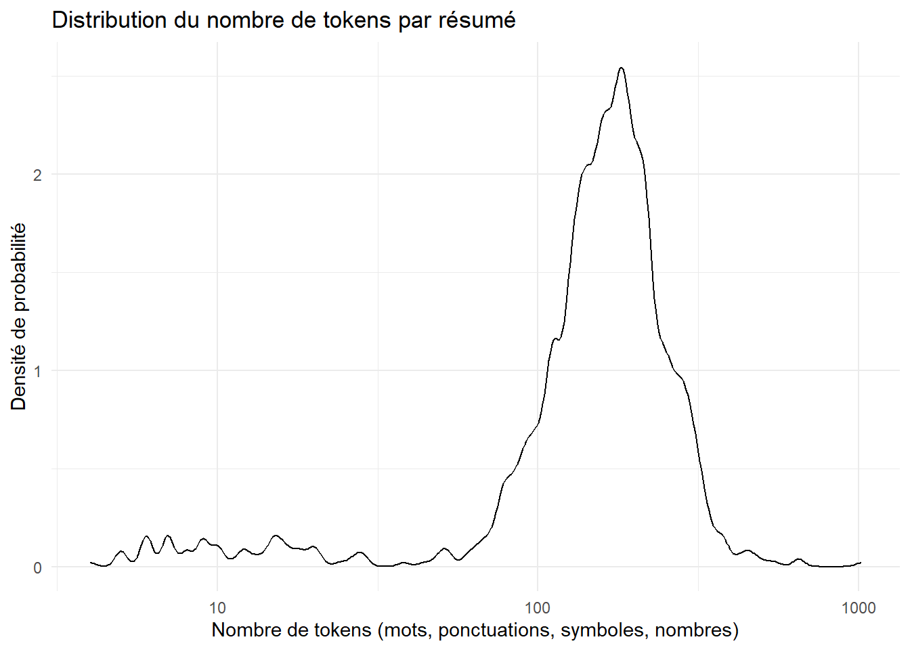
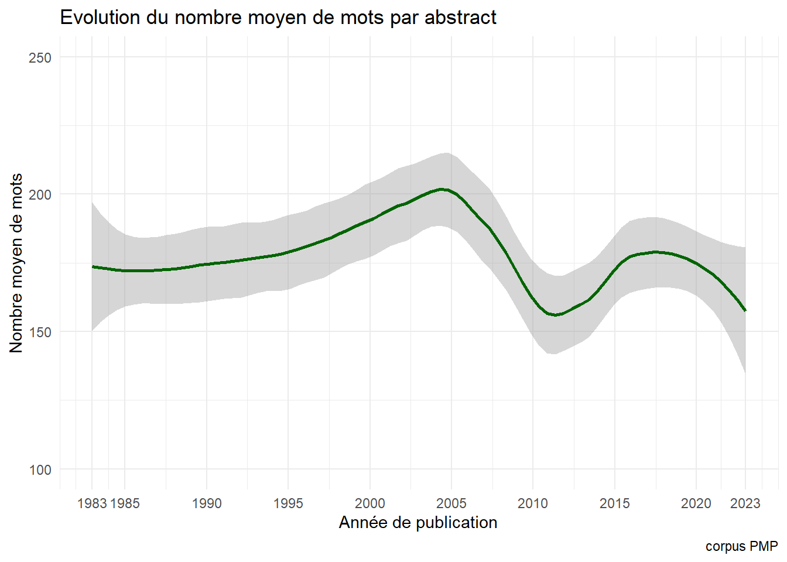
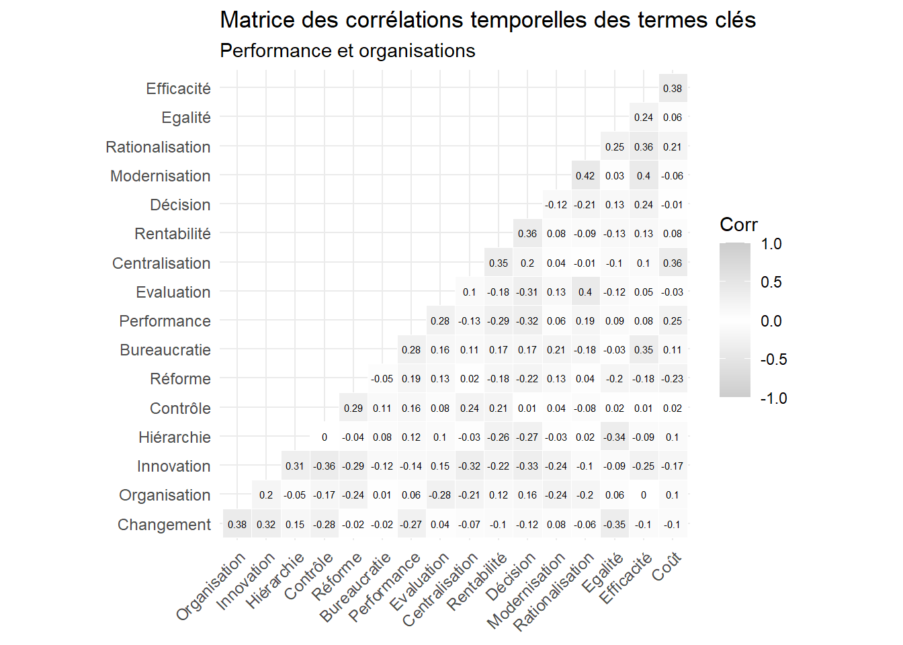
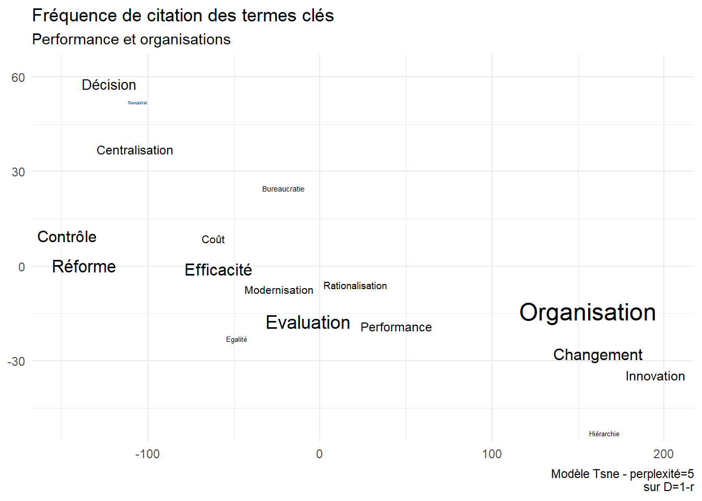

PMP 40ans : une analyse textuelle de la production
Compter les mots
Author
CB MB SB
Published
June 29, 2023
Code
#tool boxlibrary(tidyverse) #on ne peut plus s'en passerlibrary(quanteda) # les bases du nlplibrary(quanteda.textstats)library(quanteda.textmodels)library(scales)library(ggwordcloud)library(ggrepel) #gestion des labelslibrary(ggraph) library(ggcorrplot)library(flextable)library(Rtsne)# Import des fontes du système - cela peut être long#font_import()#fonts() # Liste des polices disponibles#loadfonts(device = "pdf") # Indiquer device = "pdf" pour produire un pdf theme_set(theme_minimal())# en fait on fait en noir et blanccol<-c("purple", "#ca7dcc","#fb6a4a","orange","#67000d", "firebrick","coral1" ,"pink", "ivory3" , "grey","brown4", "skyblue", "blue", "darkblue", "black","darkgreen", "chartreuse3", "chartreuse1")
Le problème
Analyser les thématiques de recherche de la revue PMP qui fête ses 40 ans et qui se définit ainsi :
“Depuis sa fondation en 1983 par Patrick Gibert et Jean-Claude Thoenig, la revue Politiques et Management Public a pour objectif de publier des recherches rendant compte scientifiquement de tous les aspects des fonctionnements et des évolutions des organisations publiques au sens large – Etat et collectivités territoriales, administrations hospitalières, agences, entreprises publiques et concessionnaires, associations… – mais aussi du développement et des transformations de l’action publique, que celle-ci soit sectorielle ou transversale, européenne, nationale ou locale. Revue académique trimestrielle Politiques et Management Public entend favoriser la diversité et l’originalité des approches, empiriques, théoriques, nationales ou comparatives, mono ou pluridisciplinaires. Par ses publications et l’organisation de rencontres, la revue a vocation à animer les débats sur les mutations des organisations publiques, les évolutions de leur gestion et les formes traditionnelles ou renouvelées de l’action publique. Politiques et Management Public s’adresse au milieu académique mais aussi à un large public de responsables politiques, administratifs et associatifs.”
Données
Au préalable un pré-traitement sous la forme d’une correction semi-automatique des erreurs de typographie (OCR et hyphénation), de graphie (orthographe), de ponctuation (guillemets et symbole), d’accentuation. 4 heures de travail.
L’unité textuelle est le résumé que complète le titre en première phrase.
Code
ggplot(dn, aes(x=n_words))+# geom_histogram(binwidth = 10)+geom_density(adjust = .5)+theme_minimal()+labs(title="Distribution du nombre de tokens par résumé", x="Nombre de tokens (mots, ponctuations, symboles, nombres)",y="Densité de probabilité")+scale_x_log10()

Code
# filtrage du corpusdn<- dn%>%filter(n_words>50& n_words<1000)
Evolution de la production
Un cycle de vie typique ? Croissance, maturité , déclin avec un tournant en 2005 ? La difficulté à alimenter la revue ?
Code
dn_year<-dn %>%group_by(Year) %>%summarise(n_abs=n(),n_words=sum(n_words))ggplot(dn_year, aes(x=Year,y=n_abs))+geom_smooth(method ="loess",span=.35, color="Coral2")+labs(title="Evolution du nombre d'articles par an",y="nombre de papiers",x="Année de publication",caption="corpus PMP")+scale_x_continuous(breaks=c(1983, 1985,1990,1995,2000,2005,2010, 2015, 2020, 2023))+ylim(0,40)
Code
ggsave("./images/pmp_n_articles_an.jpeg", width =27, height =18, units ="cm")
Stabilité de la taille des résumés
le manque des mots-clés
Code
ggplot(dn_year, aes(x=Year,y=n_words/n_abs))+geom_smooth(method ="loess",span=.4,color="darkgreen")+labs(title="Evolution du nombre moyen de mots par abstract",y="Nombre moyen de mots",x="Année de publication",caption="corpus PMP")+scale_x_continuous(breaks=c(1983, 1985,1990,1995,2000,2005,2010, 2015, 2020, 2023))+ylim(100,250)

Code
ggsave("./images/evol1.jpeg", width =27, height =18, units ="cm")
Analyse globale du lexique
On va compter les mots du corpus en otant les stopwords. On cherche à identifier les expressions par une méthode de collocation.
en tfidf pour pondérer la généralité. Certains mots se retrouvent dans tous les textes, s’ils sont fréquents ils sont aussi très peu distinctifs.
collocations
Avec les collocations parce que ce type de langage favorise les expressions composées : par exemple “service public”
On intègre ces expressions dans le vocabulaire. et avec quelques manipulations on établit le dictionnaire.
Code
#integration dans le lexiquetoks_comp <-tokens_compound(toks, pattern = tstat_col_caps) #dfmdfm <-dfm(toks_comp)# Dictionnaire et métriqueststat_freq <-as.data.frame(textstat_frequency(dfm))# La taille du lexiqueN<-as.numeric(nrow(tstat_freq))# Le nombre de token M=sum(tstat_freq$frequency)# Le calcul des statistiquetstat_freq<-tstat_freq %>%mutate(idf=log(N/docfreq),tfidf=(frequency/M)*idf)min=72max=720#on sélectionne les rank premiers tstat_freq2<- tstat_freq %>%filter(frequency> min & frequency <max) #420#une illustration set.seed(42)ggplot(tstat_freq2, aes(label = feature, size = tfidf)) +geom_text_wordcloud() +scale_size_area(max_size =5) +scale_color_discrete()+labs(title="Mots les plus fréquents dans les titres et résumés des articles de PMP",subtitle =paste0("la taille des mots est proportionnelle au tfidf - `\non écrème les termes les plus fréquents. Min = ", min, " Max=",max),caption=NULL)
Code
ggsave("./images/lexic2.jpeg", width =27, height =18, units ="cm")
Il comprend x termes différents.
Evolution dans le temps : un critère de keyness
On peut donner la même représentation par groupe quinquénal, mais ce n’est pas assez discriminant. Une analyse en keyness serait sans doute meilleure
Code
quant_deca<- toks_comp %>%tokens_group(groups = decade)dfm<- quant_deca %>%dfm() %>%dfm_group(groups=decade)chi<-12keyness1980<-textstat_keyness(dfm, target ="1980") %>%as.data.frame()%>%mutate(decade="1980")%>%filter(abs(chi2)>chi)keyness1990<-textstat_keyness(dfm, target ="1990") %>%as.data.frame()%>%mutate(decade="1990")%>%filter(abs(chi2)>chi)keyness1995<-textstat_keyness(dfm, target ="1995") %>%as.data.frame()%>%mutate(decade="1995")%>%filter(abs(chi2)>chi)keyness2000<-textstat_keyness(dfm, target ="2000") %>%as.data.frame()%>%mutate(decade="2000")%>%filter(abs(chi2)>chi)keyness2005<-textstat_keyness(dfm, target ="2005") %>%as.data.frame()%>%mutate(decade="2005")%>%filter(abs(chi2)>chi)keyness2010<-textstat_keyness(dfm, target ="2010") %>%as.data.frame()%>%mutate(decade="2010")%>%filter(abs(chi2)>chi)keyness2015<-textstat_keyness(dfm, target ="2015") %>%as.data.frame()%>%mutate(decade="2015")%>%filter(abs(chi2)>chi)keyness2020<-textstat_keyness(dfm, target ="2020") %>%as.data.frame()%>%mutate(decade="2020")%>%filter(abs(chi2)>chi)keyness<-rbind(keyness1980, keyness1990,keyness1995, keyness2000, keyness2005, keyness2010, keyness2015,keyness2020)keyness$decade=as.factor(keyness$decade)ggplot(keyness, aes(label=feature, group=decade))+geom_text_wordcloud(aes(label=feature,size=chi2), color=ifelse(keyness$chi2>0, "grey10", "grey80")) +scale_size_area(max_size =7) +labs(title="Mots les plus fréquents dans les titres et résumés des articles de PMP",subtitle =paste0("La taille des caractères est proportionnel au chi2>", chi),caption="PMP data")+facet_wrap(~decade, ncol=2)
Code
ggsave("./images/keyness_word0.jpeg", width =27, height =18, units ="cm")
Comptons les mots
Plutôt que de compter globalement, on va compter analytiquement. On va chercher des catégories précises. en saisissant les mots par des regex, ou expression régulières. Ce sont de petite formule qui permettent de trouver des pattern particulier. Une date par exemple qui s’exprime dans une forme xx/xx/xxx où les x sont des chiffres. Dans notre cas prenons l’exemple du terme “organisation”. il peut prendre de nombreuses formes ( morphologie): organisation, organisations, organisationnel,organisationnelle, organisationnelles, Organisation … On va donc compter les mots avec cette méthode qui permet de saisir une grande part de la variété morphologique qu’il prennent dans le texte.
Il faut aussi se doter d’une métrique. Certains sont peu fréquents, d’autres le sont plus, mais cela dépend aussi du volume : un mot peut être plus fréquent simplement par ce qu’il y a plus de mots prononcés dans le segment d’étude, il faut donc normaliser en rapportant la fréquence des mots dans le segment t, au nombres de mots produit au temps t. C’est une mesure de densité.On la calcule au niveau du texte, on la moyenne à l’année, et on la lisse par une méthode de loess avec un span de 0.45.
Une petite ontologie
Avant de compter il faut construire des catégories. On les retrouvera techniquement par des méthode de regex pour saisir la variété des morphèmes et des flexions.
Ce qui caractérise la revue s’est une dualité politiques publique et management public, le premier terme se construisant dans l’idée que l’état agit sur la société et l’économie par des politiques publiques, qui souvent sont sectorielles, et dont les contenus et orientation doté d’une sorte de permanence (par la norme et le droit), sont redéfini par la force politique. Le second se rapporte au fait organisationnel, celui qui se manifeste dans le corps de l’état, ses administrations, ses agences dont la finalité est justement la mise en oeuvre des premières.
Politiques publiques -> Institution->Management Public -> Performance et organisations
ggsave("./images/keyword11.jpeg", width =27, height =18, units ="cm")
Code
foo3<-foo %>%select(2:14)r<-cor(foo3)ggcorrplot(r, hc.order =TRUE, type ="lower",outline.col ="white",colors =c("Grey80", "white","Grey80" ) , lab=TRUE, lab_size=2, tl.cex=9)+labs(title="Matrice des corrélations temporelles des termes clés",subtitle ="Les éléments du management public")
Code
ggsave("./images/keyword12.jpeg", width =27, height =18, units ="cm")
Code
foo1<-foo1 %>%left_join(foo2)ggplot(foo1, aes(x=Year, y=n, group=keyword))+geom_smooth(method="loess", alpha=0, span=span, aes(color=keyword), linewidth=0.5)+scale_colour_grey()+scale_y_continuous(labels=scales::percent,limits=c(0, NA))+labs(y="densité", x=NULL, title ="Fréquence des termes",subtitle="Les éléments du management public")+facet_wrap(vars(keyword), scale="free")+theme(legend.position="none")+theme(axis.text.y =element_text(size =7,angle =0),axis.text.x =element_text(size =7,angle =0))
Code
ggsave("./images/keyword13.jpeg", width =27, height =18, units ="cm")
tsne
Code
d<-1-r#library(Rtsne)tsne_out <-Rtsne(d, perplexity=3) # Run TSNEset.seed(123)TSNE<-cbind(tsne_out$Y,rownames(d)) %>%as.data.frame() %>%rename(keyword=3)%>%left_join(foo2)TSNE$V1<-as.numeric(TSNE$V1)TSNE$V2<-as.numeric(TSNE$V2)ggplot(TSNE,aes(x=V1, y=V2,label=V3))+geom_text_repel(aes(label=keyword,size=log10(Densité)))+theme(legend.position="none")+labs(title="Fréquence de citation des termes clés",subtitle=" Les éléments du management public",x=NULL, y=NULL,caption ="Modèle Tsne - perplexité=5\nsur D=1-r")
Code
ggsave("./images/keyword14.jpeg", width =27, height =18, units ="cm")
les Ressources Humaines dominent, sa densité est de 0.8% quand pour les autres elle est de 0.2%. le management public est d’abord considéré dans cette ressources par la lentille de la ressource humaine. Le corps de l’état est une chair de fonctionnaires. C’est une obsession constante.
le management et la stratégie gagnent du terrain.
le management croît, l’administration décline , peut-être un sursaut, la stratégie et le management progresse, la gestion recule ? les politiques publique prennent un peu d’importance.
Institutions et champs
Institutions internationales
Etat
région
Collectivité locales et communales, local,métropole, mairie, municipalité
ggsave("./images/keyword31.jpeg", width =27, height =18, units ="cm")
corrélation ” Performance et organisation”
Code
foo3<-foo %>%select(2:18)r<-cor(foo3)ggcorrplot(r, hc.order =TRUE, type ="lower",outline.col ="white",colors =c("Grey80", "white","Grey80" ) , lab=TRUE, lab_size=2, tl.cex=9)+labs(title="Matrice des corrélations temporelles des termes clés",subtitle ="Performance et organisations")

Code
ggsave("./images/keyword32.jpeg", width =27, height =18, units ="cm")
Evolution ” Performance et organisation”
Code
foo1<-foo1 %>%left_join(foo2)ggplot(foo1, aes(x=Year, y=n, group=keyword))+geom_smooth(method="loess", alpha=0, span=span, aes(color=keyword), linewidth=.5)+scale_colour_grey()+scale_y_continuous(labels=scales::percent,limits=c(0, NA))+labs(y="densité", x=NULL, title ="Fréquence des termes",subtitle ="Performance et organisations")+facet_wrap(vars(keyword), scale="free")+theme(legend.position="none")+theme(axis.text.y =element_text(size =7,angle =0),axis.text.x =element_text(size =6,angle =0))
Code
ggsave("./images/keyword33.jpeg", width =27, height =18, units ="cm")
tsne ” Performance et organisation”
Code
d<-1-rlibrary(Rtsne)tsne_out <-Rtsne(d, perplexity=2) # Run TSNEset.seed(123)TSNE<-cbind(tsne_out$Y,rownames(d)) %>%as.data.frame() %>%rename(keyword=3)%>%left_join(foo2)TSNE$V1<-as.numeric(TSNE$V1)TSNE$V2<-as.numeric(TSNE$V2)ggplot(TSNE,aes(x=V1, y=V2,label=V3))+geom_text_repel(aes(label=keyword,size=Densité))+theme(legend.position="none")+labs(title="Fréquence de citation des termes clés",subtitle="Performance et organisations",x=NULL, y=NULL,caption ="Modèle Tsne - perplexité=5\nsur D=1-r")

Code
ggsave("./images/keyword34.jpeg", width =27, height =18, units ="cm")
Politiques publiques
Les politiques publiques sont des combinaisons de régulations, de taxes, de discours et de subventions qui visent dans un domaine donné à un certain résultats. Les buts les moyens et les priorités peuvent être discutées, mais souvent les politiques publiques sont constantes car le problème qu’elle traite ne dépendant toujours d’une évaluation politiques, il peut être un lieu commun, par exemple la réduction des morts et des blessés de la circulation. Depuis les années 60 ce coût a été réduit par 5, par une accumulation de progrès techninque (les voiture, la conduite), et de normes souvent contraignantes concernant la consommation d’alcool, les limites de vitesses, des dispositifs de ralentissement etc.
Les politiques publiques ont leurs ve qui n’est pas forcément celle de la vie politique.
Les politiques publiques sont souvent sectorielles.
memb <-cutree(cluster, k =8)TSNE<-cbind(TSNE,memb)TSNE$V1<-as.numeric(TSNE$V1)TSNE$V2<-as.numeric(TSNE$V2)ggplot(TSNE,aes(x=V1, y=V2,label=keyword))+geom_text_repel(aes(label=keyword,color=as.factor(memb),size=Densité), max.overlaps=Inf)+theme(legend.position="none")+labs(title="Fréquence de citation des termes clés",subtitle=" Les éléments du management public",x=NULL, y=NULL,caption ="Modèle Tsne - perplexité=5\nsur D=1-r")
Code
ggsave("./images/keyword50.jpeg", width =27, height =18, units ="cm")